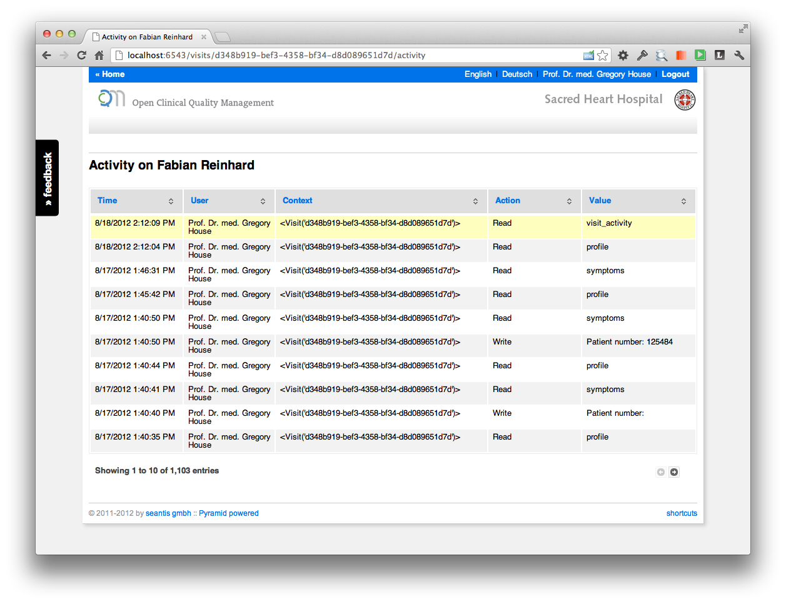
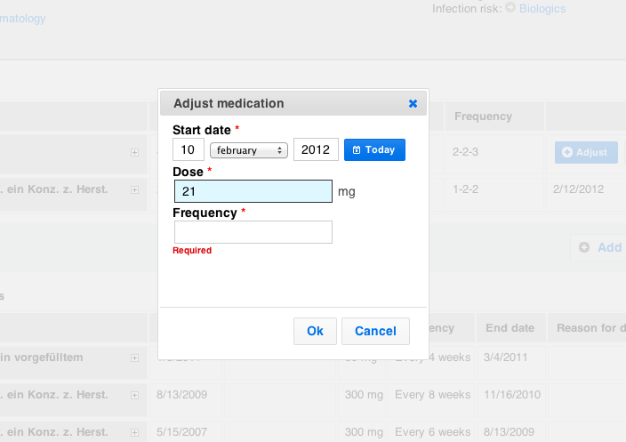
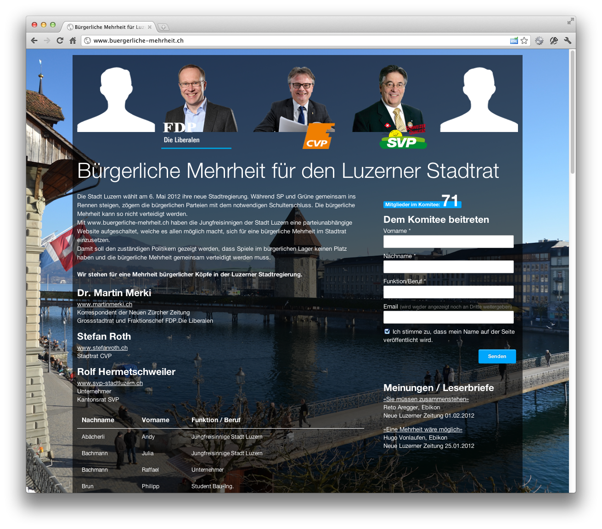

Blog
OCQMS: Clinical Activity Stream
OCQMS includes a full changelog to record all changes made to patient and clinical data. In a medical IT systems it's a key requirement to track who did what and when. It used to be seen as an unpleasant duty and therefore boring stuff required for legal compliance only. Additionally, with current implementations it's not very likely that anyone will use the data recorded in the changelog at any time.
Tracking all the read and write activities on all records of the system will leave you with thousands of log entries in no time. For OCQMS we built a simple activity table to present the information to authorized users.
I must confess that the table looks a bit too technical and you could make it a bit more accessible for humans. But the information is there and it certainly makes sense not only to track the information in some dark technical orbit far away but to actually show it to the user. Everyone can see in real time that all actions (e.g., opening and reading a patients report) are tracked!

But hey: why not making the data more accessible by giving it some "social flavor". The same boring table suddenly looks like this.

You may say that a system for medical data is no Facebook. Right! But since humans are collecting the clinical data it is a "social undertaking". And treating patients requires teamwork and is therefore genuinely social. Physicians talk to their colleagues about patients and their treatment on the hospital floors.
Some concepts from social networks such as Facebook could indeed be helpful:
- profile image: the importance of the profile image seems immature at first sign. But it can make sense because it makes reading data and assigning an author much faster and less prone to error.
- "just now": informations about events in written textual form are better suited for embedding into a chronological context (when did it happen).
- comments: commenting about activities helps to keep track of the loosely structured data resulting from personal communication. Head physicians advise their team members and everyone can see the comments and reply instantly.
So far the clinical activity stream is a concept with some mock-ups only but the implementation shouldn't be that hard.
The Experience of Learning Puppet
About a month ago I started introducing puppet to our infrastructure at seantis. After ploughing through Pro Puppet I was able to declare our basic configuration needs, setup the basic infrastructure and deploy two servers in no time.
The experience I made is the basis for this post.
Why Puppet
Before betting on puppet I had a good look at what is out there. Basically, I looked at Puppet and Chef, both ruby based systems for automating configuration. Other options like Salt or Cfengine I dismissed since they seem rather new or old, respectively.
The big difference between Puppet and Chef, as any article will tell you, is the fact that Chef is an extension to Ruby, while Puppet relies on its own declarative configuration language per default.
As I liked the idea of declaring my needs, instead of just writing ruby code, I went for the Puppet road.
(At this point I should probably spend a month with Chef, but who has that kind of time?)
Starting Out
Puppet is easy to like. The initial setup with Vagrant was simple and really helped me working out the kinks of my initial manifests.
Similarly, setting up a Puppetmaster and connecting an agent to it is something you don’t need a PHD for. There’s certainly some amount of reading required to have a basic understanding, but it’s neither brain surgery nor rocket science.
It Gets Complex Fast
Puppet has the concept of modules. Being used to write reusable code I pretty much started using them for any service I could think of. Setup Mysql? Use a module. Define Users? Use a module. And so on.
Unfortunately, this is the point where documentation gets kinda thin. It’s nice if you can set up your a Trac project with two lines of code after you’ve hidden all the nitty gritty in some module. It’s really what I hoped to gain by declaring my configs. No more going crazy on the shell for 10 minutes to set up everything. No more silly mistakes. Set it, forget it.
But then you realize that you coupled your Trac module too closely with the Nginx configuration. So you move some code out. You then realize that for another project to live on the same server you need to completely rethink your approach because you are not flexible enough.
It’s all still okay, mind you. You can test your changes locally, you can do some real life staging and once you update your production machine you can be reasonably sure that nothing unexpected will happen.
That’s of course what a learning curve looks like, but I was still somewhat unprepared for the fast increase in complexity of my configurations.
Puppet Forge to the Rescue?
Whenever a smaller mind like yours truly encounters problems it goes off to wander around open source land. The Puppet Forge and numerous Github projects are waiting to be studied.
Unfortunately, it’s not like shopping for a nice Python module in the Cheeseshop. It is quite hard to find a module that suits your needs. If you find one it is then hard to assess the quality of said module. At least for novices like me.
I mean I did find good modules, like the Mysql module from Puppetlabs (though my Mysql needs are really basic). But I also encountered a number of modules which just didn’t seem like the kind of modules I would want to use on our infrastructure.
For example Puppetlabs’ own Nginx module which has a listen_port parameter in the vhost resource which does nothing. A bug which was fixed in another fork months ago and has since been sitting around waiting to be pulled.
I mean I know that Puppetlabs’ modules are not an official part of puppet, but as someone who is starting out it is still kinda surprising to me that a bug like that wouldn’t be fixed quicker. A module by the people who wrote puppet just seems like a module you would want to trust.
Do Modules Really Work?
At this point I’m starting to wonder just how feasible community modules really are. From the modules I wrote and the modules I looked at I get the feeling that it is very hard to write a good module that supports different, complex use cases.
The fork-jungle that is puppetlabs-nginx suggests that you end up writing your own version of a module quickly. Which of course is a bit of a problem, because it gets very hard to figure out which module to use. So you fork your own. Or write your own. And who wants to do that? There are certainly more interesting things to work on.
Summing Up
I do like Puppet and it certainly helped a lot already. Even if just for the fact that it forced me to really understand all the steps involved in configuring our servers. But Puppet is not yet something that feels completely solid. At least not for complex use cases. At least not to me.
But, I am keen to learn a great deal more about it so my views are surely up for changing. And what do I know, really?
Also visit my personal blog: http://blog.stacktrace.ch
NZZ in binärer Kodierung
Mutig mutig, alte Tante! Was ich noch nicht ganz verstehe ist die Konvertierung in Binärcode. Müssten es für diese Textlänge nicht viel mehr Zeichen (0,1) sein? Darum bei der per Tweet nachgefragt (https://twitter.com/seantis/status/211755317267152896):
@nzz die binäre Frontseite vom Freitag war grossartig! Welche Konvertierung in Binärcode ist das? Scheinen mir etwas gar wenig Zeichen...
— seantis (@seantis) Juni 10, 2012
Gerade noch einmal selbst darüber nachgedacht. Für jedes Zeichen (Buchstabe, Zahl) werden 8 binäre Stellen gebraucht:
Der NZZ-Schriftzug ist also entsprechend gekürzt:
"01001110 01011010 01011010" heisst "NZZ"
Damit sind alle Artikel sehr stark gekürzt! :-)
Neue Zürcher Zeitung: www.nzz.ch
OCQMS - Medications Form



Learn more about the ideas behind the design of the medications form: http://www.seantis.ch/blog/designing-a-medication-form
Responsive Website

Die Site ist nach dem Konzept des „Responsible Web-Designs“ erstellt. Die Darstellung der Seite passt sich also automatisch der Bildschirmauflösung an. Das Ziel ist eine optimale User Experience auf einer Vielzahl von Endgeräten, insbesondere auch mobile Devices wie Smartphones oder Tablets.
 Für das Responsible haben sich seit dem Jahr 2010 [http://www.alistapart.com/articles /responsive-web-design] interessante Ansätze herauskristallisiert. Alle basieren auf einem Flexible Grid und auf Media Query. Interessante Möglichkeiten bieten auch Open Source Frameworks wie z.B. „Foundation“ [http://foundation.zurb.com]. Foundation beinhaltet neben einer Vielzahl anderer Komponenten ein ausgefeiltes Grid- Layout. Die Spalten des Layout passen sich automatisch der Auflösung des Endgerätes an.
Für das Responsible haben sich seit dem Jahr 2010 [http://www.alistapart.com/articles /responsive-web-design] interessante Ansätze herauskristallisiert. Alle basieren auf einem Flexible Grid und auf Media Query. Interessante Möglichkeiten bieten auch Open Source Frameworks wie z.B. „Foundation“ [http://foundation.zurb.com]. Foundation beinhaltet neben einer Vielzahl anderer Komponenten ein ausgefeiltes Grid- Layout. Die Spalten des Layout passen sich automatisch der Auflösung des Endgerätes an.
Die Seite ist mit dem Pyramid Web Application Development Framework umgesetzt.